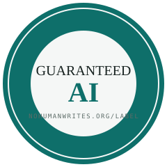
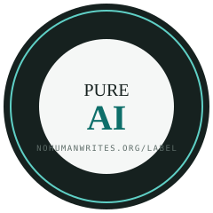

The human-made marks say a person made the work, on the creator's word. This one says the work came through a signed machine channel, on a signature you can re-check, with every unit that did not listed beside the number. The key proves the channel, not the author.


Two seals, two grades. Each one links to a report that anyone with the public key can re-derive. Free to display on anything that passes the check; forbidden on anything that does not.
The 90 % mirrors Not By AI's "90 % rule", which asks a creator to estimate that at least 90 % of the content is human. Same number, opposite direction, and ours is counted by the verifier rather than estimated by the author.
It does not guarantee quality, correctness or safety. It does not guarantee authorship: "write exactly these lines", or an agent copying a hand-written file back into place, yields an attested hunk. It does not claim the absence of human judgement, which sits in the prompt and the review and is not made of bytes. And it is not anonymity: the ledger records a key fingerprint, never a name, but on a small team a key identifies a person by elimination, so reports aggregate per repository. A badge names the path it covers; one that does not is invalid.
Level 1, self-signed (shipped): the author's machine key signs each hunk through the harness hook; the verifier uses its own trust root, never the repository's. Level 2, anchored (designed, not built): the ledger head recorded in a transparency log at each commit, so a deleted record leaves a visible gap. Anchoring makes the history tamper-evident; it does not make a false record true, and a key-holder can still sign anything. Taking the key-holder out of the loop needs a trusted executor outside the writer's reach, a third design the paper's §10.3 describes and nobody ships yet.
python3 nohumanwrites.py setup # once: hook + dedicated key # ... work with the agent inside the repository ... python3 nohumanwrites.py check <path> --label # grade, dated badge, wording Pure AI · 100% attested · checked 2026-09-06 · Level 1 (self-signed) · 111 of 111 units
Refused, with the reason printed, when there is no signed ledger, when the evidence is unsigned transcripts, when the trust root is the repository's own keys, and below 90 %. A label with no ledger behind it is the kind of mark this one exists to replace.
Writing that comes through a logged machine channel arrives with a prompt, a diff, a log, a test run and a signature. Writing through any other channel arrives with none of those. Google's CEO said in October 2024 that "more than a quarter of all new code at Google is generated by AI, then reviewed and accepted by engineers"; reports in 2026 put the figure at three quarters. The attested share is the one per-unit record of that division a third party can check. It is a coverage statistic of logged channels. It is not a measure of autonomy, of capability or of the approach to general intelligence, and an earlier draft that called a registry of such shares a "thermometer" of that approach was wrong; eight external reviewers said so and the white paper now says what a real study of delegation would need instead. The evidence, the counter-evidence and the ways the label can be gamed are in the paper.
White paper: Guaranteed AI: a label for work the machine wrote, and why it will matter more every year · Spec and terms of use
The NoHumanWrites repository, checked on 6 September 2026, attests at 18 % of units: most of its prose reached the disk through shell heredocs, which the hook does not see. It does not earn its own label. The label/ directory, written through the signed channel on purpose, scores 100 %: Pure AI, though v0.1 of the paper scored 99 % and the v0.2 rewrite replaced the offending block through the signed channel, which is rewrite laundering by the paper's own §7, done in the open. Command, output, key fingerprint and tag are in §8 so anyone with the public key can rerun it.